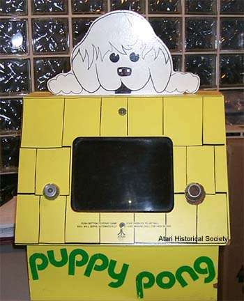
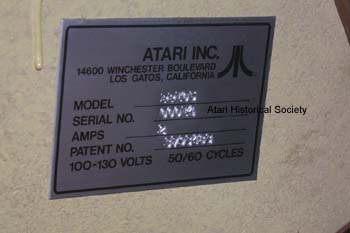
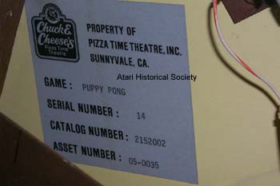

This is Atari Puppy Pong, serial #14. This is a very
rare and rather unknown Atari coin-op game. Basically it was
Atari Pong without a coin box packaged into a very cute little table top
wooden cabinet. According to Regan Cheng formerly of
Atari's Industrial Design group (Regan is the man responsible for the ominous
Atari 5200 look and he also created Atari's all new high-tech XL computer
line styling.) "The Puppy Pong was originally conceptualized
by Nolan Bushnell, Steve Bristow, and various marketing guys. The original
idea was Snoopy
Pong for which I designed a red dog house cabinet with Snoopy on top
as you see in the comics. The original concept was called Doctor Pong,
a unit for pediatrician office waiting rooms to keep children occupied."
Regan also mentioned "It was originally designed by Chas Grossman, Industrial
Designer. He was the design manager for Pete Tachaichi and myself ( I believe
for about 1 year 1975. The puppy house was left over from the
Snoopy
Pong, but painted yellow instead of red." It was the perfect
game for small children and so simple to play all it took was a push of
the button located in the center of the game under the main screen that
would reset the game to play up to a winning 10 point score.

So Atari's Puppy Pong's only spot-light in public was during its testing phase in the Chuck E. Cheese Pizza Time Theater in California where it was placed on table tops in the restaurant for people to play while waiting for their pizza. This Puppy Pong has made its way to the Atari Historical Society courtesy of Dennis Gregory a former Atari Employee and former Pizza Time Employee.
{kind=link}
{kind=link}